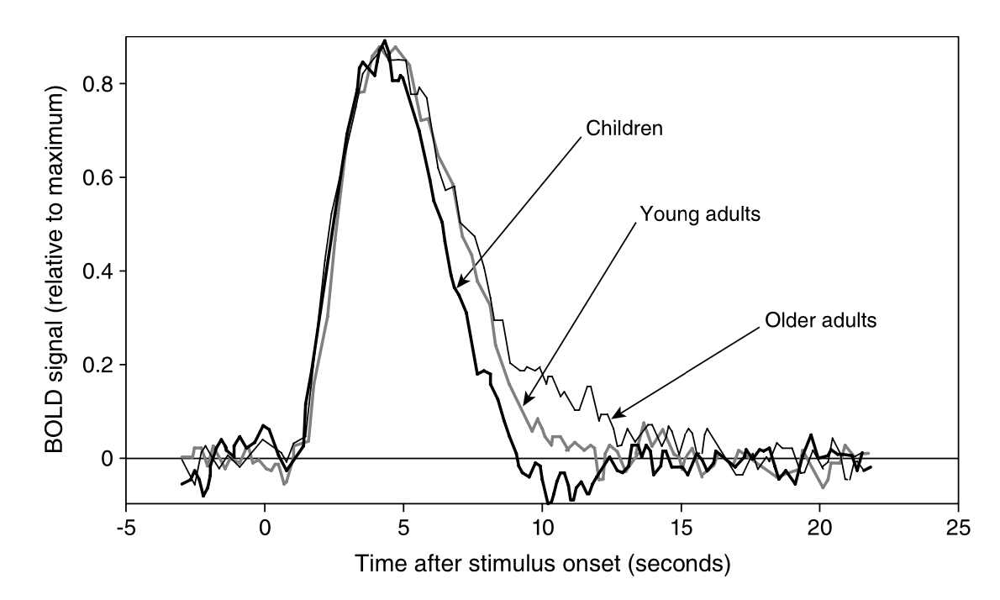

Hemoglobin and the Basis of the BOLD Signal
Functional MRI (fMRI) often relies on the Blood-Oxygen-Level-Dependent (BOLD) contrast mechanism to detect brain activity. This mechanism is based on the distinct magnetic properties of hemoglobin, which vary according to its oxygenation state. Oxyhemoglobin (oxygen-bound hemoglobin) is diamagnetic (no unpaired electrons, similar magnetic susceptibility to water and tissue), whereas deoxyhemoglobin (hemoglobin that has released its oxygen) is paramagnetic due to 4 unpaired electrons in the iron atoms. Paramagnetic substances create local distortions in the magnetic field. Thus, deoxyhemoglobin inside blood vessels behaves like a microscopic magnet, perturbing the local magnetic field in its vicinity.
The presence of more deoxyhemoglobin leads to faster dephasing of nearby proton spins (especially those in tissue and blood water around the vessel), effectively shortening and . In practical terms, more deoxyhemoglobin = lower MRI signal (on T2-sensitive images) because the spins lose phase coherence more quickly (a loss of signal by the echo time). Conversely, if deoxyhemoglobin is reduced (i.e. more oxyhemoglobin is present), local field homogeneity improves and are lengthened, yielding a higher MRI signal.
This is the essence of BOLD contrast: it is an indirect measure of changes in blood oxygenation. Notably, the effect is strongest on -weighted sequences (such as gradient-echo echo-planar imaging used in fMRI), with the optimal echo time tuned to the tissue’s (typically 30–40 ms at 3 T for BOLD). Spin-echo sequences are less sensitive to BOLD because they refocus static dephasing; however, at very high fields spin-echo BOLD (sensitive to smaller vessels) can also be used, leveraging diffusion effects near capillaries.
So how do changes in neural activity modulate the levels of deoxyhemoglobin?
This occurs through a physiological process called neurovascular coupling. When neurons become more active, they consume more oxygen and energy. The local change in metabolism triggers a cascade of events (mediated by signaling molecules and vascular responses) that leads to increased cerebral blood flow (CBF) to the active region, as well as a smaller increase in cerebral blood volume (CBV) in the local microvasculature. Critically, the increase in blood flow overcompensates for the oxygen consumed by neurons. As a result, even though the neurons are using oxygen faster, the influx of fresh blood carrying oxyhemoglobin is so great that the local fraction of deoxyhemoglobin actually decreases relative to baseline. For example, at rest a venule might have ~40% deoxyhemoglobin, but during activation it might drop to 30% or less because of the excess oxygenated blood delivered. This reduction in deoxyhemoglobin causes the local magnetic field environment to become more homogeneous (less paramagnetic disturbance), thus increasing the MR signal from that region on T2*-weighted images . In short, active brain regions get brighter in BOLD fMRI because they have more oxyhemoglobin and less deoxyhemoglobin compared to when they are inactive.
It’s important to note that the BOLD signal is relative and measures a complex interplay of factors: changes in CBF, changes in oxygen metabolism (CMRO₂), and changes in blood volume all contribute to the signal. The stereotypical change observed (in most of cortex under normal conditions) is an increase in blood flow that dominates, yielding a positive BOLD signal change for increased neural activity. However, there can be nuances: an initial dip (transient increase in deoxyhemoglobin before blood flow kicks in) and a post-stimulus undershoot are often observed, as discussed next. Additionally, because the BOLD effect arises predominantly from changes in , the strength of the effect depends on field strength (higher field MRI yields a larger percent signal change for BOLD) and on the vessel size and architecture (larger vessels contribute more to the signal change on gradient-echo BOLD due to bigger susceptibility gradients , whereas spin-echo BOLD preferentially weights microvascular changes ). Despite these complexities, BOLD fMRI has proven to be a robust method for mapping brain activity due to this tight coupling between neural activity and localized blood oxygenation changes.
Hemodynamic Response Function (HRF) – Shape of the BOLD Signal
When the neural activity in a region changes (for instance, a brief stimulus causing a burst of neural firing), the BOLD signal in that region does not rise instantly but follows a delayed, stereotyped time course known as the hemodynamic response. The Hemodynamic Response Function (HRF) describes the BOLD signal change over time in response to an instantaneous neural event (it’s essentially the impulse-response of the vascular system in the brain ). Key features of the HRF include an initial latency, a possible small dip, a prominent peak, and a post-stimulus undershoot:

Canonical BOLD hemodynamic response following a brief neural stimulus, illustrating the typical phases: a small initial dip, a larger delayed peak, and a post-stimulus undershoot_. Empirical studies (e.g., Richter & Richter, 2003) have demonstrated that the HRF generally consists of a positive peak around 5-6 seconds after stimulus onset, followed by a smaller negative dip (undershoot) around 12-16 seconds. Eventually, the hemodynamics return to baseline, typically by ~20–30 s post-stimulus.*
In a typical event-related fMRI experiment, even a very short neural stimulus (e.g. a 1 s visual flash) will produce a BOLD signal change that unfolds over many seconds. There is an initial delay of ~1–2 s before any significant rise in signal (this reflects the hemodynamic lag — it takes a couple of seconds for blood flow to change after neural activity). Sometimes a small initial dip in the signal can be seen around 1–2 s post-stimulus, thought to correspond to the early oxygen consumption before blood flow increases. However, this dip is usually tiny (a slight decrease in signal of perhaps 0.1–0.5%) and is often masked by noise; it has been reliably observed mainly in high-field or high signal-to-noise studies. Its exact origin is still debated (it could result from a transient increase in oxygen extraction or a rapid increase in local blood volume that briefly increases deoxyhemoglobin) .
The main feature of the HRF is the positive peak. About 4–6 seconds after the stimulus onset, the BOLD signal reaches a maximum above baseline. This peak can be on the order of a 1–5% increase in signal in a 3 T scanner (depending on the region and amplitude of neural activity). It reflects the hyper-oxygenation of the blood: the cerebral blood flow has increased so much that it supplies more oxygen than the neurons can use, thus washing out deoxyhemoglobin and making the MR signal higher . If the stimulus is brief, the BOLD signal will peak and then start to drop back down even while the stimulus has ceased (because neural activity returned to baseline). If the stimulus is prolonged (say, a 20 s task), the BOLD signal will rise and plateau (as blood flow remains elevated), and when the stimulus stops, the signal will dip back down.
After the peak and the end of the neural stimulation, the BOLD signal often overshoots below baseline, resulting in a post-stimulus undershoot that can last for several seconds (e.g., 5–15 s after the peak). In this phase, the signal is slightly lower than the original baseline. The cause of the undershoot is not fully settled, but it is commonly attributed to continued elevated cerebral blood volume even after blood flow has returned to baseline, or to lingering metabolic effects that temporarily increase deoxyhemoglobin above baseline levels. Essentially, the vessels (especially veins) might remain dilated for a while, so blood volume is high but blood flow and oxygen delivery have normalized, leading to a higher fraction of deoxyhemoglobin and hence a lower signal until the vasculature recovers. Eventually, everything returns to baseline, completing the cycle.
From a signal processing perspective, the HRF acts like a smoothing filter on the neural activity: rapid bursts of neural firing will produce a sluggish, smoothed-out BOLD signal change. This is why, in fMRI data analysis, one often models the neural events convolved with a canonical HRF to predict the BOLD signal. The canonical HRF (such as the one used in SPM software) is often modeled as the sum of two gamma functions – one for the main peak and a smaller one for the undershoot – capturing the general shape (peak around 5 s, undershoot around 10–15 s) .
Formalizing the HRF and Linear Convolution
Suppose a participant is exposed to an event or stimulus at time 0. This event elicits neural activity denoted by and a corresponding BOLD response denoted by . This relationship can be formally represented as:
This mapping is linear if it satisfies the superposition principle:
if and , then it must be true that
Discrete and Continuous Representations
Considering a discrete neural activation function, we express it as a series of impulses:
Applying the linear superposition principle, the corresponding BOLD response becomes:
Here, the function is the system’s response to an impulse, known as the hemodynamic response function (HRF). Thus, the HRF characterizes how neural activation translates into BOLD signal changes.
In the continuous limit, the relationship becomes a convolution integral:
This convolution is often succinctly represented as:
Canonical HRF Models
Several mathematical forms are commonly used to model HRFs:
1. Single Gamma Function
The simplest form is a gamma function without an undershoot:
2. Double Gamma (Gamma-variate) Function
Incorporates both a main response peak and a subsequent undershoot:
Here, modulates the amplitude of the undershoot.
Practical Example Using Nilearn
To illustrate how an HRF might be generated and visualized using Nilearn’s built-in Glover HRF model:
import numpy as np
import matplotlib.pyplot as plt
from nilearn.glm.first_level.hemodynamic_models import glover_hrf
# Define time points for the HRF
time_points = np.linspace(0, 32, 1000)
# Generate Glover HRF
glover = glover_hrf(tr=1.0, oversampling=10, time_length=32, onset=0.0)
# Plot HRF
plt.plot(time_points[:len(glover)], glover)
plt.title('Glover Hemodynamic Response Function')
plt.xlabel('Time (seconds)')
plt.ylabel('Amplitude')
plt.grid(True)
plt.show()This code generates the canonical HRF described by Glover (1999), which is extensively used in fMRI studies for modeling neural responses. Nilearn’s functions simplify HRF computation and visualization for analysis and educational purposes.
Choosing an HRF Model
Selecting an appropriate HRF model depends on your experimental design, type of stimulus, and brain region under study. While canonical forms like the Glover HRF offer robust approximations, flexibility in modeling is sometimes required for capturing subtle differences in brain responses.
References
- Ashby, F. G. (2011). Statistical Analysis of fMRI Data. MIT Press.
- Bandettini PA, Wong EC, et al. (1992). Time course EPI of human brain function during task activation. Magn Reson Med, 25(2): 390-7. (Early demonstration of BOLD fMRI)
- Glover, G. H. (1999). Deconvolution of impulse response in event-related BOLD fMRI. NeuroImage, 9(4), 416–429.
- Ogawa S, et al. (1990). Oxygenation-sensitive contrast in magnetic resonance image of rodent brain at high magnetic fields. Magn Reson Med, 14(1): 68-78 . (Classic paper identifying deoxyhemoglobin’s magnetic properties and the basis of BOLD)
- Uludağ K, et al. (2009). An integrative model for neuronal activity-induced signal changes for gradient and spin echo fMRI. NeuroImage, 48(1): 150-165 . (Advanced reading on the biophysical models of the BOLD signal)
- Huettel SA, Song AW, McCarthy G. Functional Magnetic Resonance Imaging (3rd ed.), 2014. (Good overview of BOLD mechanism and neurovascular coupling)
- Richter, W., & Richter, M. (2003). The shape of the fMRI BOLD response in children and adults changes systematically with age. NeuroImage, 20(2), 1122–1131.